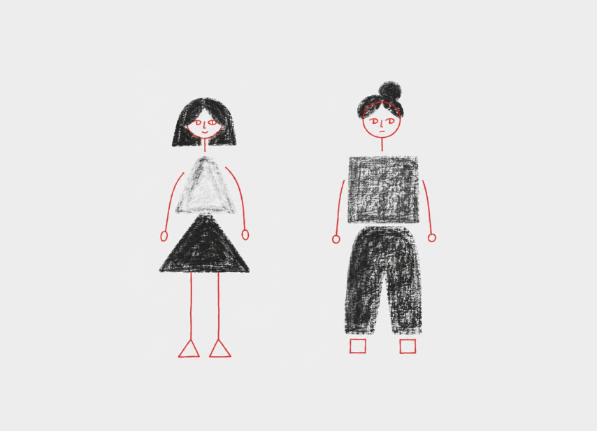
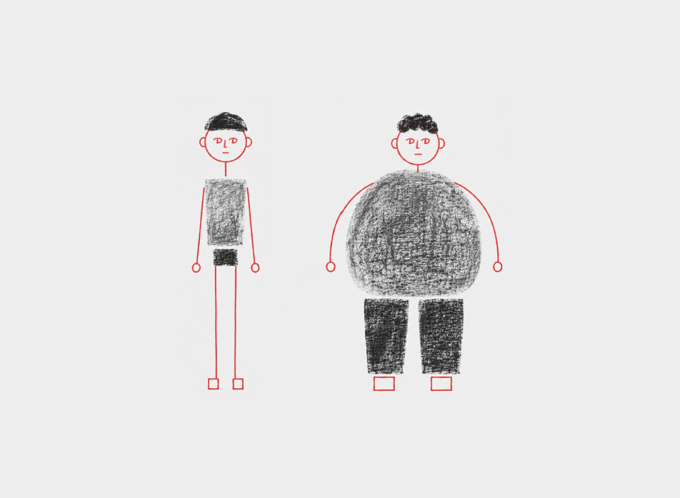
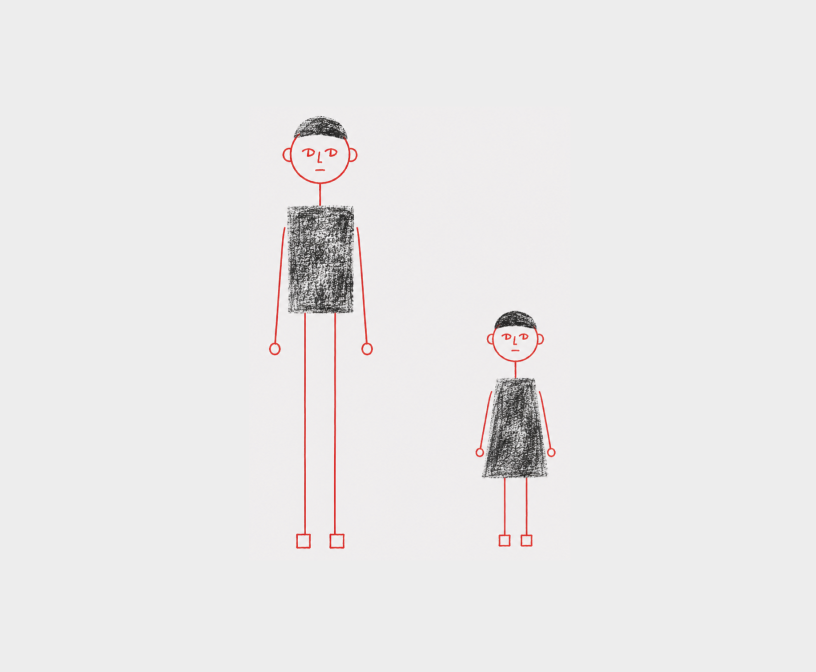
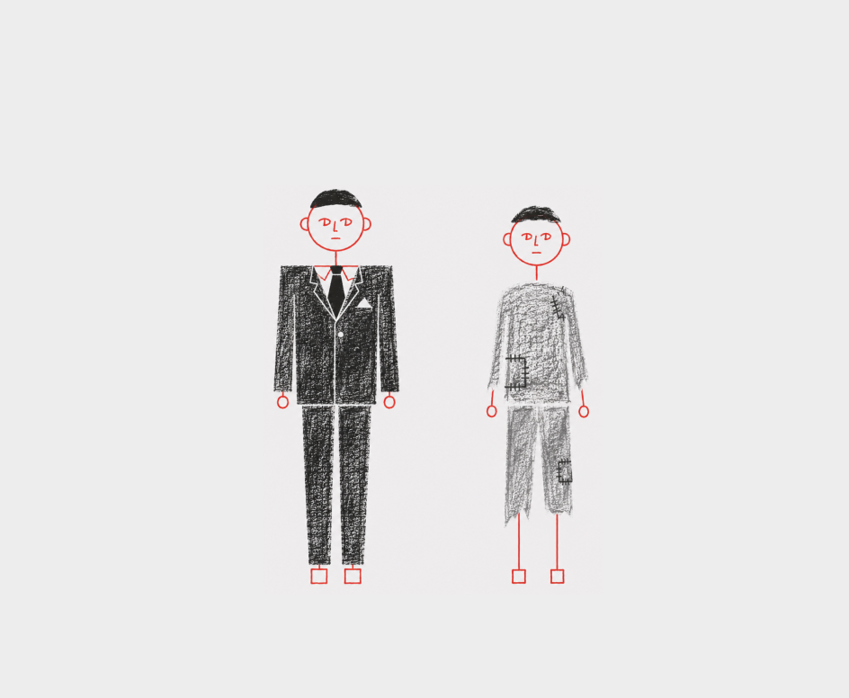

SNS는 인생의 가장 극적인 하이라이트만 편집해 보여주는 공간이다. 문제는 많은 20대가 이 ‘편집된 화면’을 자신의 ‘평범하고 가공되지 않은 일상’과 나란히 세워두고 비교하기 시작할 때 발생한다. 타인의 최고점과 나의 평범함을 비교하는 순간, 기분은 급격히 가라앉고 나만 홀로 뒤처진 것 같은 상대적 박탈감, 즉 ‘비교병’에 빠지게 된다.


이러한 현상은 단순한 기분 탓이 아니라 과학적인 연구 결과로도 증명된다. 최근 과학전문지 ‘네이처’에 실린 연구에 따르면, 우울과 불안 같은 정신 건강 문제를 겪는 청소년들은 그렇지 않은 이들에 비해 SNS 사용 시간이 평균 50분 더 길었다.
그러나 역설적이게도 이들의 온라인 이용 만족도는 훨씬 낮았다. SNS에 머무는 시간이 길어질수록 타인의 삶과 자신을 비교하는 ‘상향 비교’의 늪에 빠지기 쉽고, 게시물의 댓글이나 좋아요 등 외부의 반응에 지나치게 민감해지기 때문이다. 결과적으로 미국 성인을 대상으로 한 또 다른 연구에서는 SNS를 자주 확인하는 집단이 그렇지 않은 집단보다 우울감 고위험군에 속할 가능성이 무려 2.7배나 높다는 사실이 밝혀지기도 했다.
여기서 가장 심각한 지점은 ‘비교와 우울의 악순환’이다. 현실에서 우울감이나 불안을 느끼는 청소년과 청년들은 현실을 도피하기 위해 혹은 타인과의 연결감을 얻기 위해 SNS를 더 찾게 된다. 하지만 그 안에서 타인의 완벽해 보이는 삶을 보며 또다시 상향 비교를 반복하고, 이로 인해 우울감이 심화되어 결국 SNS 이용 시간을 스스로 통제할 수 없는 중독 상태에 이른다. 우울해서 SNS를 켜고, SNS를 봐서 더 우울해지는 비극적인 굴레가 완성되는 것이다.


인생의 전환기를 지나며 진로와 미래에 대한 고민이 가장 깊은 20대에게, 타인의 성공적 서사만 노출되는 SNS는 정서적으로 치명적인 독이 될 수 있다. 비교는 인간의 본능이라지만, 알고리즘이 24시간 내내 타인의 빛나는 삶을 배달해 주는 환경에서는 이 본능이 칼날이 되어 나를 찌른다.
이제는 뇌의 자동적인 비교 반응을 방치해서는 안 된다. SBS 속 세상은 연출된 무대일 뿐임을 인지하는 메타인지를 기르고, 의식적으로 미디어 사용을 제한하는 ‘디지털 디톡스’가 필요하다. 타인의 하이라이트 릴과 나의 비하인드 스토리를 비교하는 무의미한 반복을 멈출 때, 비로소 20대의 일상도 온전한 자신의 빛을 되찾을 수 있을 것이다.